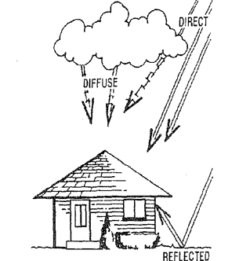
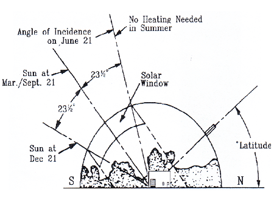
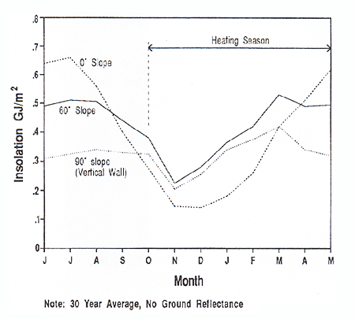
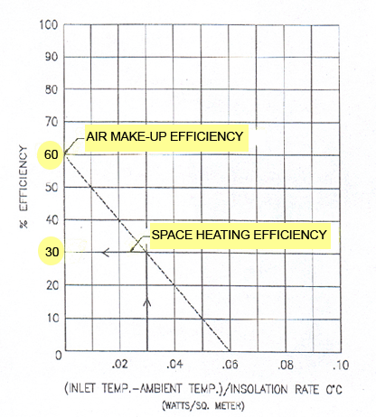

Introduction
Introduction to Solar Heating
Last updated: 16 June 2026 | 5 min read
What is Solar Air Heating?
Solar air heating is a solar thermal technology in which the energy from the sun is captured and used to heat air. It is a "clean heat" technology that provides solar heating, ventilation heating, or process heat applications. It addresses one of the largest usages of building energy in heating climates, which is space heating. It is also used for agricultural drying.
Solar air heating systems have been used globally for the past 20 years for a wide variety of multi-national companies, schools, municipalities, military, agricultural applications, and commercial & industrial entities. As most solar air heating systems are made of metal, they are easily integrated into both new and retrofit buildings, and can be styled, shaped and designed to accommodate any architectural style.
Solar Air Heating Benefits
Most solar air heating systems are wall-mounted, which allow them to capture a maximum amount of solar radiation in the winter. They are also fully building-integrated and typically reduce between 20-50% of conventional energy used for heating buildings.
Other environmental and economic benefits include:
-
Sizable renewable energy production
- 1.5 – 3.5 therms / ft2 of energy per year or 1.5 – 3.5 GJ/m2 of energy per year
- 50-60 peak watts/ft2
- Energy independence
- Local job creation, especially associated with installation
-
GHG reduction
- 1 ton of CO2/year for every 50ft2 of collector (offset against natural gas, and more for heating oil or propane)
- LEED® points (up to 10 points in EAC1 and EAC2)
- Improved indoor air quality (for systems heating ventilation air)
- Building remediation
- Seamless integration into building envelope and building mechanical system
- No maintenance and 30+ year lifespan
How Solar Air Heating Works
Specially perforated solar collector panels are installed several inches from a south facing wall, creating an air cavity. (Southeast, southwest, east, and west wall are also possible.) The metal solar cladding is heated by the solar radiation from the sun, and ventilation fans create negative pressure in the air cavity, drawing in the solar heated air through the panel perforations. The proprietary manufacturing equipment and design process – for both the panel and the framing system – is used to control the amount of airflow through the perforations. This maintains a consistent draw across the entire wall surface and ensures the cooler air beyond the heated boundary layer is not introduced into the air stream.
The air is generally taken off the top of the wall (since hot air rises) and that ensures that all of the solar heat produced is collected. The heated air is then ducted into the building via a connection to the HVAC intake. Since the air entering into the air handler has already been heated – anywhere from 30–100 degrees F above ambient – this reduces the energy load on the conventional heater. On sunny days it will often eliminate the need for conventional heating during the day, which is when most commercial and industrial buildings are occupied. The solar heated fresh air is then distributed into the building through the existing HVAC system or with separate air makeup fans and perforated ducting.
.gif)
As well as providing on-site renewable energy, solar air heating systems are also commonly specified when increased ventilation air is required, or for building remediation purposes when exterior cladding has to be replaced.
Building integrated solar air heating provides a direct source reduction of fuel – and corresponding CO2 emissions – associated with heating buildings. It produces substantial on-site renewable energy and is poised for significant uptake around the world as an essential technology to addressing the CO2 emissions from the building sector.
Background Information on Solar Radiation for Solar Air Heating
Solar space heating with air solar collectors is more popular in USA and Canada than heating with solar water collectors since most buildings already have a ventilation system for heating and cooling
Solar Radiation
What is surprising is the amount of energy available even on cloudy days, which also tend to be not as cold. Clouds act as a blanket over the earth preventing some of its energy from radiating away. Solar radiation reaches solar panels in three ways: as direct, diffuse, and reflected radiation.
Direct radiation consists of parallel rays coming straight from the sun. This type of radiation casts shadows on clear days.
Diffuse radiation is scattered, nonparallel energy rays. This type of radiation makes the sky blue on clear days and grey on hazy days.
Reflected radiation is solar energy received by collectors from adjacent surfaces of the building or ground. It depends a lot on the shape, color, and texture of the surrounding surfaces.

A nearly constant amount of solar radiation strikes the exterior of the earth's atmosphere 1,350 W/m2 (429 Btu/h·ft2). However, a large amount of this energy is lost in the earth's atmosphere by absorption and reflection as it travels towards the earth's surface. The purity of the atmosphere, vapor, dust, and smoke content all have an effect on radiation, as does the angle of the sun. The relative amount of radiation received on earth is diminished when the sun is lower in the sky.
Clouds and particles in the atmosphere not only reflect and absorb solar energy, but they also scatter it in many directions. Thus, part of the solar radiation may be diffused. Diffuse radiation, as opposed to direct radiation, is greater on hazy days than clear ones. Diffuse radiation can account for 50 percent of the total annual radiation for a wall facing south.
Reflected radiation from adjacent surfaces amounts to about 20 percent of the direct and diffuse solar radiation. However, with a bright snow-covered surface in front of a solar collector, the reflected radiation can increase to over 50 percent. Reflected radiation from adjacent surfaces can be a very important factor in collector sizing and placement.
| Radiation | Btu/ft2 per day | MJ/m2 per day |
|---|---|---|
| Direct | 485 | 5.5 |
| Diffuse | 245 | 2.8 |
| Reflected | 150 | 1.7 |
| Total | 880 | 10 |

Collector Angle
Solar designers have traditionally recommended that collectors used for space heating applications be sloped at the degree of latitude, plus 10° to 15°. By having the collectors at this slope, the incident radiation is maximized during the months in which there is a space heating requirement, however, there are other factors to consider. Unless the collectors can be supported on a sloped roof of this angle, a collector support rack must be built.

Figure 3 graphs the incident radiation on a horizontal, vertical and a 60° sloped surface in Ottawa and illustrates that a vertical collector performs close to that of a sloped collector without any ground reflectance. When ground reflectance is included, a vertical wall will produce from 15% to 30% more heat than a collector at a 60 degree angle. For heating of buildings in northern latitudes, a vertical wall is therefore the preferred surface for mounting solar collectors.
There are other advantages to vertically mounted collectors versus sloped collectors.
- Incident radiation during the summer months is greatly reduced on a vertical surface, thus reducing heat gain during these no-load periods.
- The structural costs for wall-mounted systems are low.
- Duct losses for wall-mounted fans are non existent.
- Snow build-up is not a problem.
- Vertical panels rarely add wind loads to the building.
- Installation costs are lower.
Solar Heating Efficiency
The efficiency of a solar collector is highest when the temperature of the air entering the solar panel equals ambient temperature. This occurs with the transpired panel since outside air always enters the system.
In space heating designs, building return air enters a solar panel to be heated above room temperature. On cold, overcast days, there may be insufficient energy to achieve this, whereas, when heating ambient air, any heat gain, whether it be a rise of two degrees or twenty degrees, is useful energy.
Performance Example
Assume:
- Plant air temperature: 20°C
- Outside temperature: −10°C
- Solar radiation: 1,000 W/m2
Recirculating plant air through solar panels:
X-axis intercept: $$\frac{20-(-10)}{1000} = 0.03$$
Therefore, efficiency is 30% from graph.
Drawing ventilation (outside) air through solar panels:
X-axis intercept: $$\frac{-10-(-10)}{1000} = 0$$
Therefore, efficiency is 60% from graph.
Performance of a system heating ambient air can be double that of other solar heating designs.

Using the solar efficiency curve in figure 4, the solar performance of heating fresh air can be compared to conventional solar heating systems.